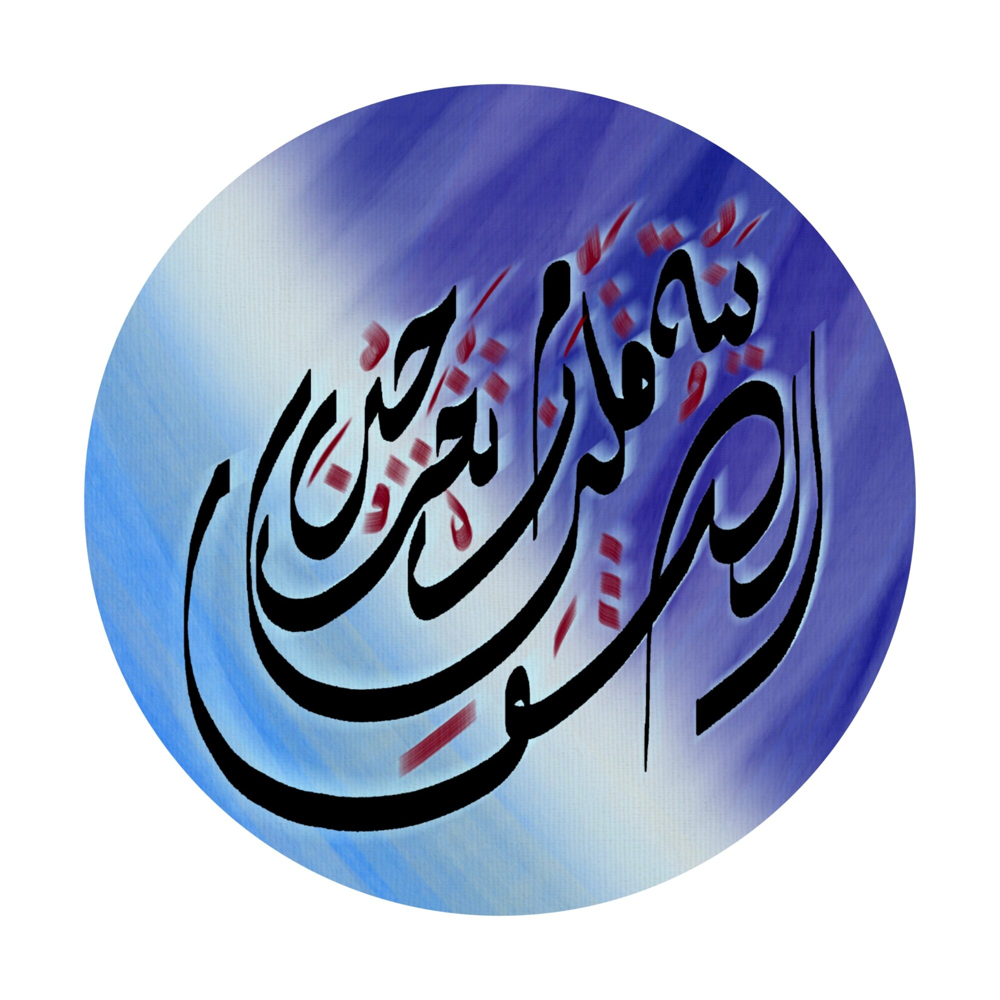
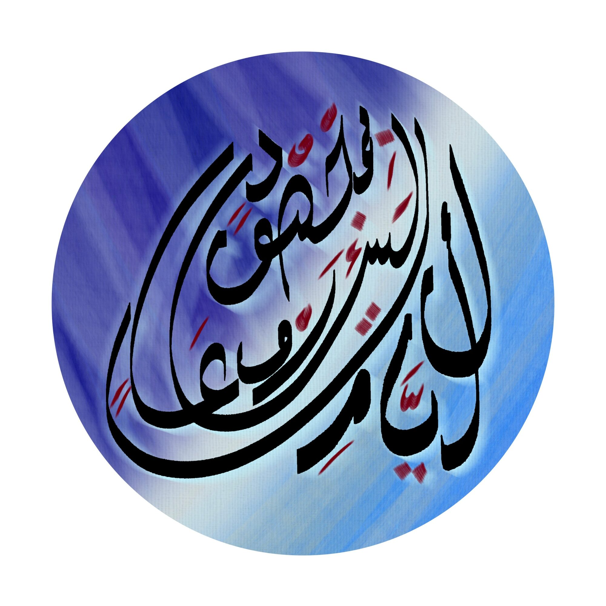
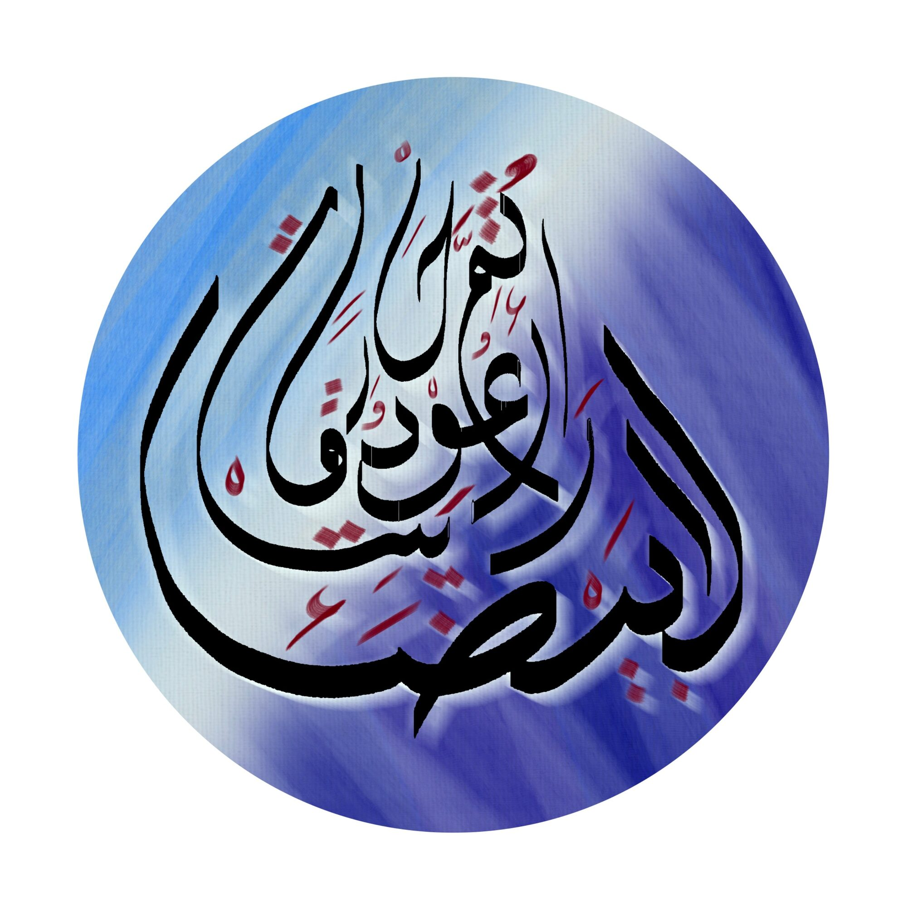
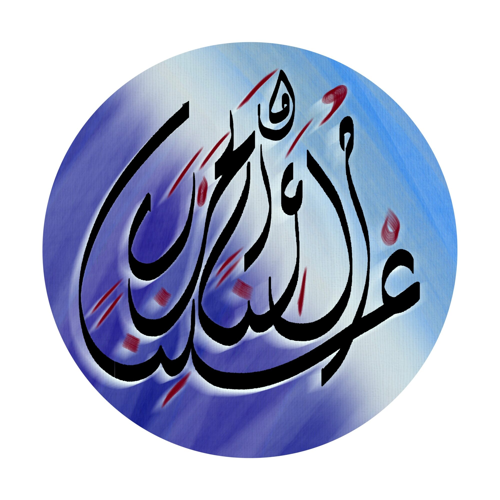
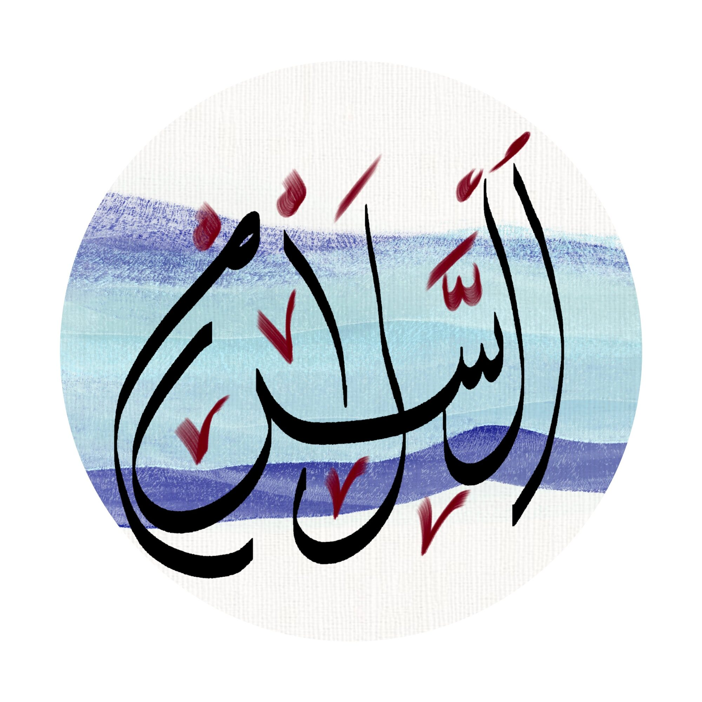
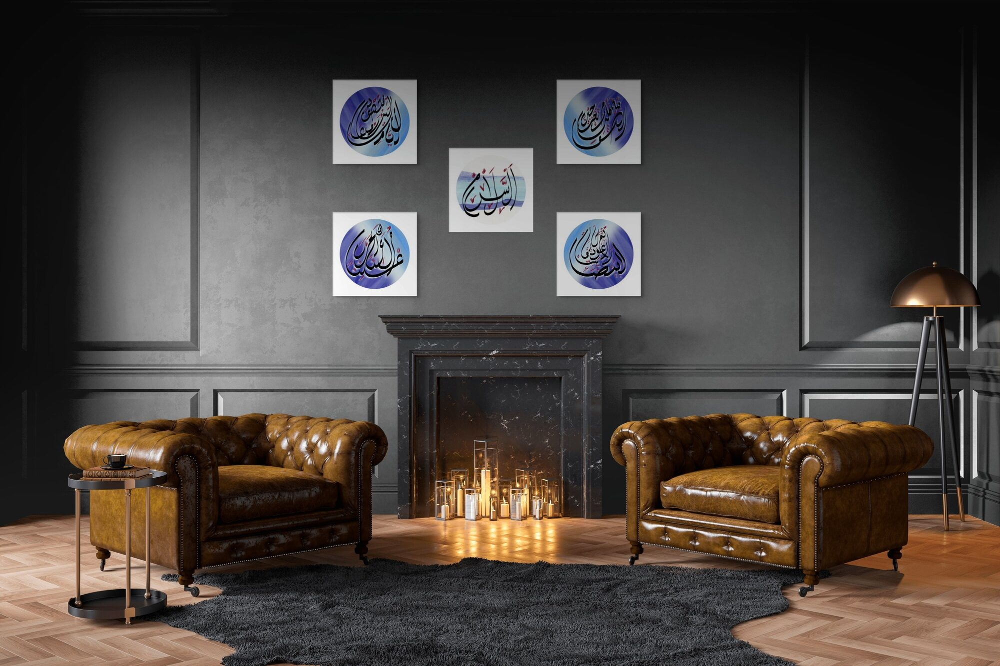
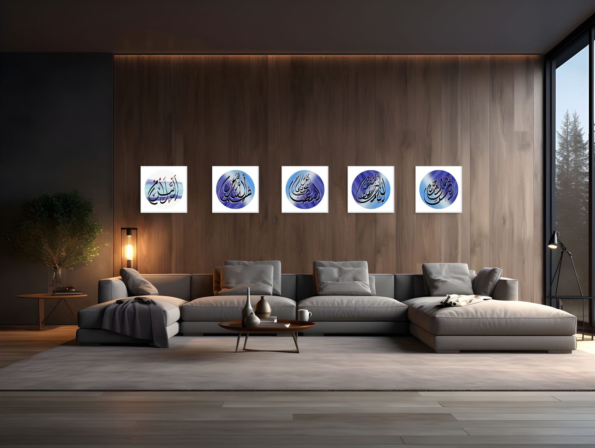
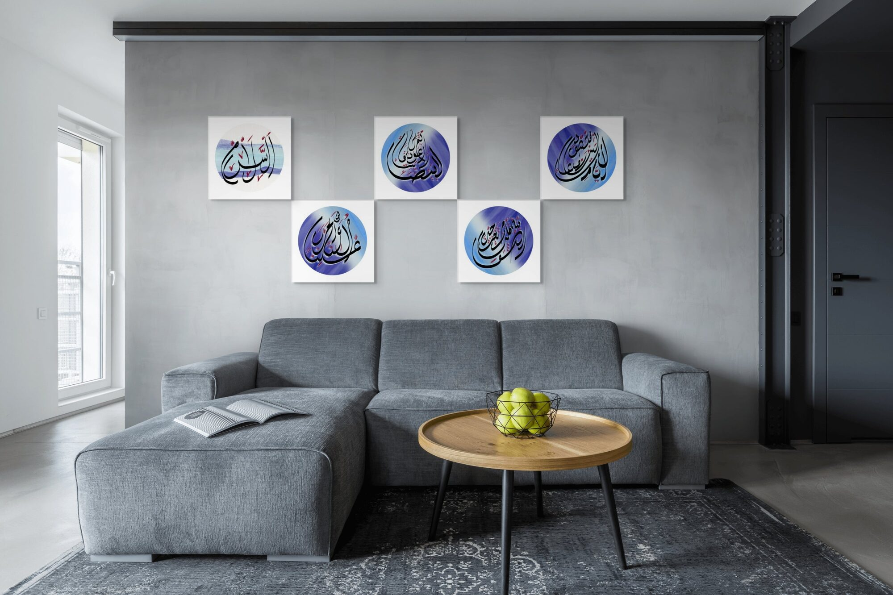
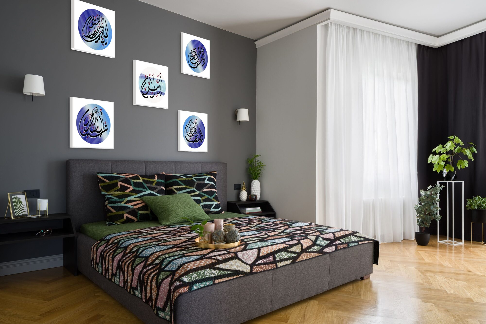
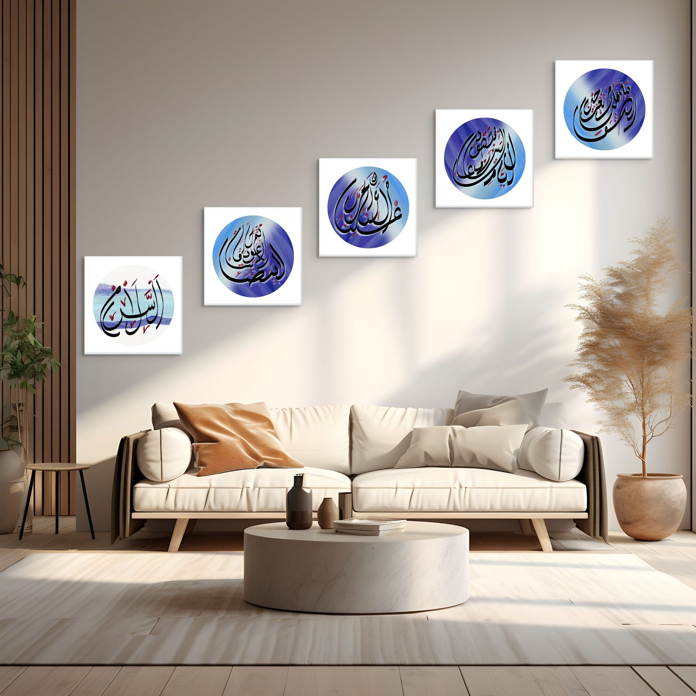

تخرجين من قلبي الهوينة لساعات وبمجهودٍ لأيامِ ثم أعود حارقاً رايتي البيضاء معلناً الحرب ولاعناً السلام
You leave my heart slowly, for hours, and with effort, for days — then I return burning my white flag, declaring war and cursing peace.
الفارس الأبيض · The White Knight

This work explores the same emotional territory as The Dark Knight, rendered in its opposite register — the surrender rather than the revolt, the white flag before it burns.
Where The Dark Knight holds tension and weight, The White Knight offers space and breath. The composition is lighter in tone but no less serious in intention — this is the version of the poem that precedes the war, when peace still felt possible.









Ask about الفارس الأبيض
Editions are small and made after the conversation. Tell me the format you have in mind and the wall it is going to.
Enquire about this work